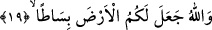
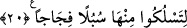

dirilme ve haşr olunma esnâsında “sizi yeniden” oradan “çıkaracaktır.” Bunda hiç
kuşku yoktur. Allah bunu dostlarını mükâfatlandırmak, düşmanlarını hesaba çekmek için
yapacaktır.
Âyette “sonra sizi yine oraya döndürecek ve sonra sizi yeniden çıkaracaktır”
denilmiyor. “Döndürme” fiili ile “yerden çıkarma” fiili arasına “sümme”/sonra
kelimesi değil de “ve” kelimesi getiriliyor. Böylece yerden çıkarılmak ile kabre
döndürülmenin sanki aynı şeymiş gibi oldukları gösteriliyor. Şu hâlde bunların birinin
mutlaka meydana gelmesi, diğerinin ise böyle olmaması mümkün değildir.
et-Tevilâtü’n-necmiyye’de bu âyet-i kerîme şöyle tefsir olunuyor: Allah Teâlâ
beşeriyet toprağınızdan ahlâk ve sıfat bitkilerini çıkarmıştır. Sonra sizi “fena”dan sonra
“baka” ile toprağa yeniden geri çevirecektir. Bunu tabîatınızla ve tabiî meylinizle değil,
Allah’ın istediği şekilde beşerî ahkâmınıza tekrar dönme yoluyla yapacaktır. Yâni Allah
Teâla sizi çıkaracak, bir başka ifâdeyle sizi ızhar edecek, âlemde kendiniz, kendi
gücünüz ve kudretinizle değil, Allah’ın murâdına uygun tasarruf yapmaya kâdir hâle
getirecektir.
19. Allah, yeryüzünü sizin için bir sergi yapmıştır.
“Allah yeryüzünü sizin için” menfaatiniz için “bir sergi yapmıştır.” Burada “Allah”
ism-i celîli, ta’zim ve teberrük için zikredilmiştir. Burada geçen “arz” kelimesi, Mülk
sûresi ile diğer başka sûrelerde beyân edilmişti. “Bisât”, yaygı ve döşek gibi geniş bir
sergi hâlinde yaratmıştır. Sizler orada evinizdeki sergilerin üzerinde rahatça gezip
dolaştığınız gibi dolaşmaktasınız.
Ebû Hayyân der ki: Bu âyetin zâhirinden anlaşılan yeryüzünün küre biçiminde değil
de dümdüz olduğudur.
Sa’dî Müftî der ki: “Ebû Hayyân, «âyetin zâhiri» dedi. Zira müfessirlerin tefsir
ettikleri üzere buradaki teşbihin, üzerinde gezinmek yönüyle olduğu söylenmiştir.”
Daha önce birçok defa geçtiği üzere yeryüzünün küre biçiminde olması orada ekin
ekilmesi, ağaç dikilmesi ve buna benzer faaliyetlerin yapılmasına mânî değildir. Çünkü
yeryüzünün dâiresi çok büyüktür. Bu tıpkı güvercin yumurtasıyla deve kuşu yumurtası
arasında ortaya çıkan farka benzer.
20. Tâ ki onda geniş yollar edinip dolaşabilesiniz diye,
Gezip dolaşmak şeklinde tercüme edilen “li teslukû” fiili “sulûk” kökündendir. Bu